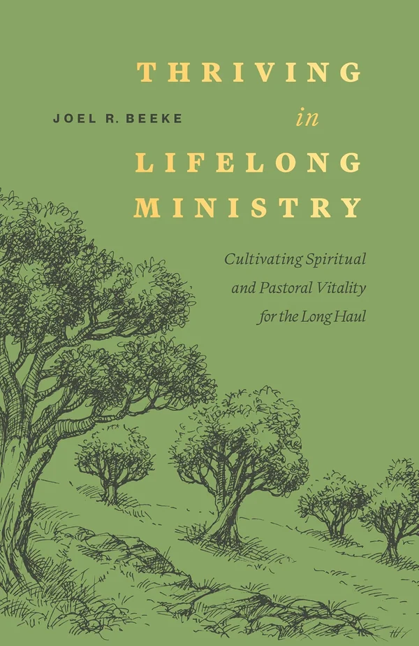

Reformation Heritage Books · New release
Thriving in Lifelong Ministry
Cultivating Spiritual and Pastoral Vitality for the Long Haul
Reformation Heritage Books · Ministry
Released October 20, 2026 · ISBN 9798886862911
About the book
Beeke draws on nearly fifty years in the pastorate to show how a minister stays spiritually alive across decades: personal piety, family, preaching, leadership, health, and perseverance through opposition. Twelve chapters aimed at pastors who want to finish well rather than merely survive.
The Picky Reader note: a notable new release we're tracking. We'll add our own take when we revisit it.
← Back to the calendar Get the weekly email
Disclosure: The Picky Reader may earn a commission from purchases made through our links, at no extra cost to you.